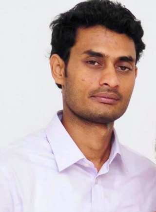

Architect & Technical Project Manager
Resolution Life | Wipro Technologies
Exstream Cloud Edition migration, cloud upgrades and deployment, orchestration with AWS Lambda, and email, SMS, archive and print delivery integration.HELLO, I’M SIBI
I design, build and modernize enterprise Customer Communications Management solutions, with 18+ years across OpenText Exstream, architecture, cloud, integration and technical delivery.

01 — ABOUT
Experienced OpenText Exstream Professional and Software Solution Architect with a background in enterprise architecture design, development, testing, project management, troubleshooting and cloud computing.
I have worked across onshore and offshore teams and delivered complex document generation and distribution solutions using OpenText Exstream and related CCM technologies.
02 — EXPERIENCE
Full career history ↗Resolution Life | Wipro Technologies
Exstream Cloud Edition migration, cloud upgrades and deployment, orchestration with AWS Lambda, and email, SMS, archive and print delivery integration.Citi Bank · APAC — 9 countries
Exstream formatting, suppression and statement delivery; architecture for multi-country solutions; technical guidance for 20+ developers.Sanlam Life Insurance | TCS
Exstream Cloud Edition implementation and IBM Content Manager integration for email, SMS, archive and print channels.Citi Bank · APAC — Wipro
Designed Exstream solutions for on-demand e-delivery and print channels, including upgrades and complex troubleshooting.New York Life Insurance | Syntel
Migrated 52,000 pages from Doumergue to OpenText Exstream and led Command Center development in UNIX.Nordea Bank | Accenture
Designed customer-facing banking documents, live interactive outputs and archival PDF copies using Exstream.Hewlett-Packard
Technical consulting for global Exstream clients across migrations, integrations and product enhancements.Vodafone · Commonwealth Bank of Australia · HOV Services
Document automation, Exstream Live Editor, customer statements, XML workflow automation and team leadership.03 — EXPERTISE
04 — EDUCATION
Sri Sairam Engineering College, Anna University, Chennai · 2007
Theni College of Arts and Science, Madurai Kamaraj University · 2004
HP Exstream Software — Solution Development (HP2-B95)
Implementing Exstream Solutions (HP2-N57)
Exstream 16.3 Developer Certification
05 — CONTACT